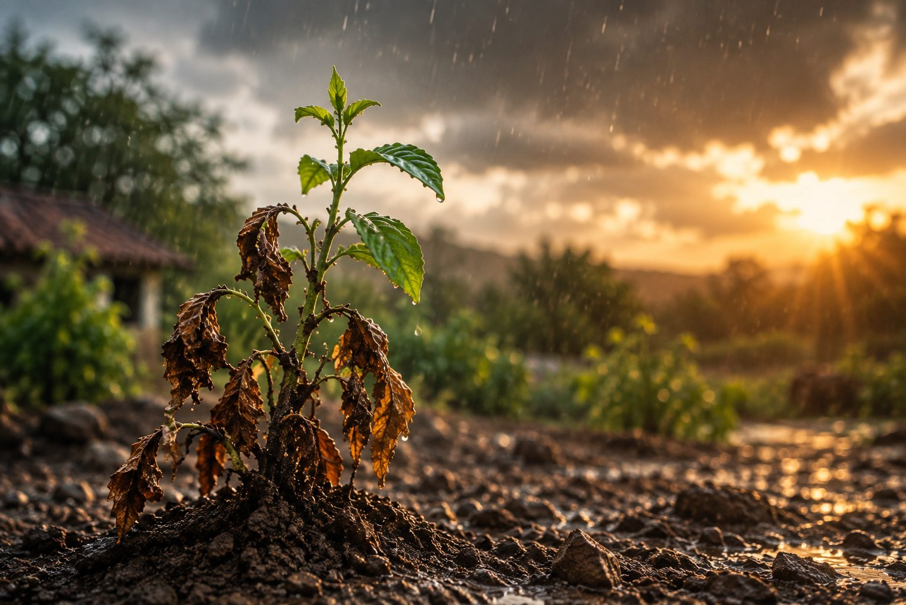

The Gardener's Season

Every summer, our garden at our village house tells me the same story. This year wasn't any different. The heat was so harsh that a few plants completely dried up. Their leaves had fallen. Their branches looked lifeless. We looked at them and honestly thought,
"They're gone."
We even spoke about removing them and planting new ones once the monsoon arrived. Then came the first few monsoon rains.
A few days later...
something beautiful happened.
The very same plants we had almost given up on...
started turning green again.
Slowly...
leaf by leaf...
they came back to life.
We didn't plant anything new. Life was already there. It was simply waiting for its season.
Looking back...
I realize I've done the same thing with my own life. There were seasons when I thought a closed door was the end. A disappointment felt permanent. A failure felt final. I couldn't see beyond the season I was living in.
Just like those plants...
I had quietly declared parts of my life,
"Over."
But the plants had already been given up in my eyes. They had never been given up by the gardener. Looking back today, I can honestly say the same about my own life. There were seasons when I couldn't see hope. But God never stopped seeing a future. He didn't always restore what I thought I had lost.
Many times...
He first restored me.
And when He restored me...
I slowly began to see that my story wasn't ending. It was simply entering a new season.
What part of my life have I quietly declared "Over"...
while the Gardener still sees life?
What if this isn't the end of my story...
but simply the season I'm walking through today?
If the Gardener hasn't given up...
why should I?